MiniDV Transfer
Equipment List
-
Sony Digital Video Deck Model HVR-M25AU (and AC power cord) 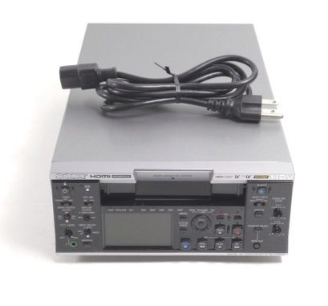
-
FireWire 800/400 9-Pin/6-Pin Cable 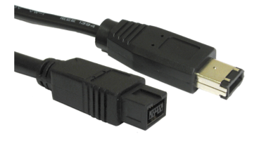
-
Apple Thunderbolt to FireWire Adapter 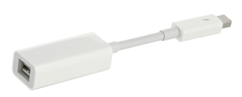 For necessary tape repairs (4-6):
-
1⁄4” splicing tape 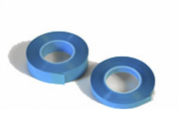
-
1.4mm Phillips screwdriver 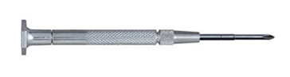
-
Single edge razor or sharp scissors 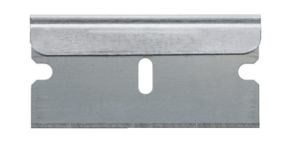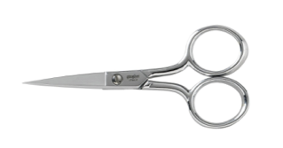
For cleaning the video heads when they become clogged (7-8): -
Lint-free swabs (for cleaning the video heads) 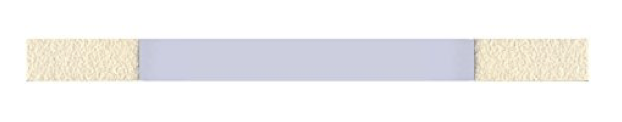
-
Isopropyl Alcohol (99%) (for cleaning video heads)
MiniDV Background
MiniDV is a video format introduced in 1995. Its small size and visual quality made it especially popular in the consumer and educational markets. Each tape holds about 13 GB for about one hour of video. Runtime is on average around 60 minutes if recorded at standard play (SP) or 90 minutes at long play (LP).
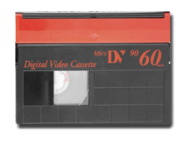
Like other DV format videotapes, the magnetic tape inside a MiniDV cassette is 1⁄4 inch wide so any repairs may be made with 1⁄4 inch splicing tape, typically used in audio work. While physical repairs are rarely required, repair techniques will be briefly reviewed at the end of this documentation.
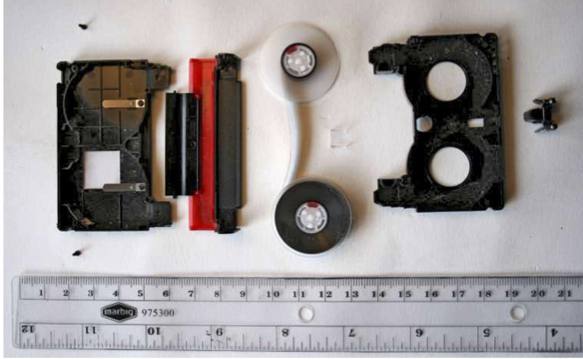
MiniDV tapes can be played in most DVCAM decks. The Sony deck you are receiving (Model HVR-M25AU) has a dual-size cassette mechanism that accepts both mini- and standard-sized DigitalMaster, DVCAM and DV video tapes. Note: certain Panasonic brand MiniDV tapes cannot be played on Sony decks.
The encoding stored on MiniDV tape can be Digital Video (DV), DVCAM or HDV. The video signal for all these formats is compressed or “lossy.” The audio signal for DV however is uncompressed. The sampling rate (number of audio samples per second) and the bit depth (number of bits used to carry the data in each sample of audio) can vary.
DV supports the following modes of linear pulse code modulated (PCM) audio: 4 channels at 12 bits with a 32 kHz sampling rate 2 channels at 16 bits with a 48 kHz sampling rate 2 channels at 12 bits 32 kHz mode 2 channels at 16 bits at 44.1 kHz sampling rate (similar to CDs) Sampling rate:
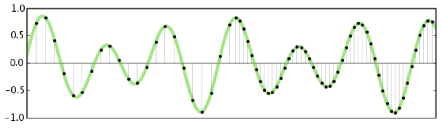
DVCAM is a semi-professional version of DV and can play back at a faster rate. HDV video is encoded with a H.262/MPEG-2 compression scheme and its stereo audio is encoded with the MPEG-1 Layer 2 compression scheme. The compressed audio and video are incorporated into an MPEG-2 transport stream. The aspect ratio of a MiniDV video streams may either be standard (4:3) or widescreen (16:9):
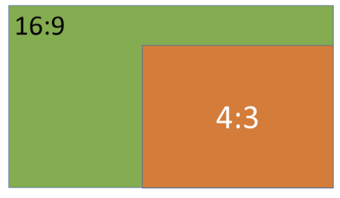
For this project we’ll be capturing the video data stream over a FireWire connection that will preserve the data in its more accurate form, including its original metadata. FireWire is also referred to as i.LINK. Transferring the stream over other traditional video outputs such as component or S-video out would alter the data.
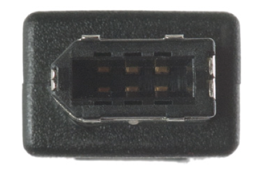
Transfering MiniDV Content
The software you will use to transfer DV and DVCAM content is called AVCVideoCap. It’s a tool in Apple FireWire SDK Version 26, a software development kit for Mac OS. AVCVideoCap is an excellent candidate for MiniDV preservation because it transmits the raw data signals without applying any changes to the picture or sound. The resulting raw master file can be encoded to any variety of derivative files.
AVCVideoCap however will not capture HDV content. For tapes containing HDV, you will use is DVHSCap. Both workflows will be demonstrated below.
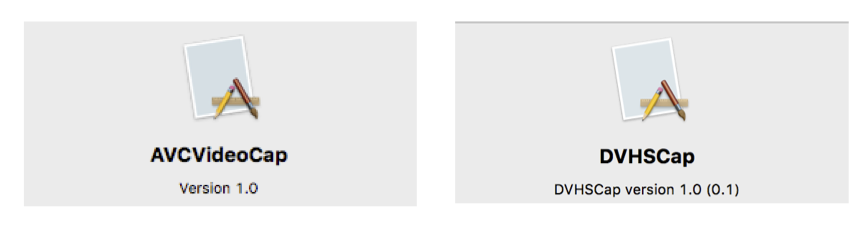
Connect cables and power:
- Plug supplied power cord into the AC IN connector in the rear of the Sony HVR-M25AU DV deck. Plug the other end into your power source.
- Plug the FireWire 800/400 9-Pin/6-Pin Cable into the i.LINK jack in the rear of the DV deck. The 6-Pin connection will connect to the DV deck.
- Connect the FireWire 9-pin connection to the Apple FireWire Thunderbolt adapter.
- Plug the thunderbolt adapter into your MacBook Pro.
- Turn the DV unit on before turning on your computer. * Flip the power switch in the back of the unit to “ON”. * Press the power button in the front of deck.
Prepare your MiniDV for transfer:
- Ensure your MiniDV is set to “Safe Mode” so it cannot be accidentally recorded over. 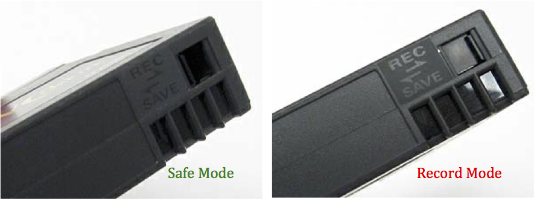
- Insert your MiniDV cassette. Gently but firmly push the tape into the tape door.
- Rewind your tape if it isn’t already at the start of the recording.
- Push “Play” and briefly review the aspect ratio, video and audio specifications. The LCD screen located on the front of the video deck will show the picture. Sound can be monitored with headphones plugged into the green headphone jack in the front of the deck. The audio sampling rate for your recording will automatically display on the LCD screen. Make sure the Audio Mode of the deck is set to match the original sampling rate of the recording. To do this go to: Menu>Audio Set>Audio Mode. Here you can adjust between 48 kHz or 32 kHz.
**Initiate transfer of DV/DVCAM: **
- For DV or DVCAM open capture software called AVCVideoCap by either: * Typing AVCVideoCap in Mac Spotlight search field or, * Goto: Macintosh HD>Developer>FireWireSDK26>Applications>AVCVideoCap.app
- Highlight the DV unit under listed devices 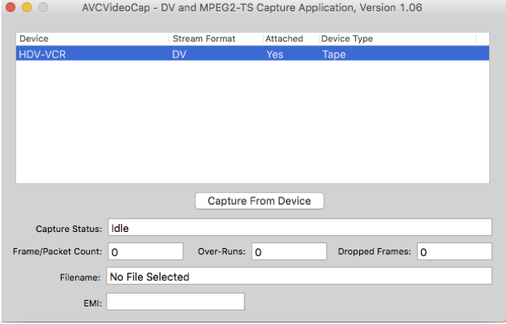
- Click on “Capture From Device.” Name your file and select a location on your hard drive to save the file to. Then click “Save.” 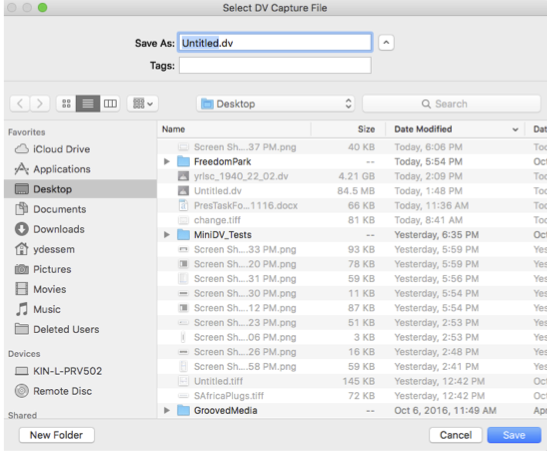
- Next, under recording mode, select “Tape Control,” then select “Continue.” 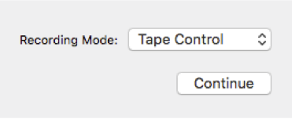
- The MiniDV will automatically begin playing and transmitting DV or DVCAM data. When complete the tape will automatically stop. If you wish to stop capture at any point, select “Abort Capture Now.” The resulting digital video file will have a .DV extension. 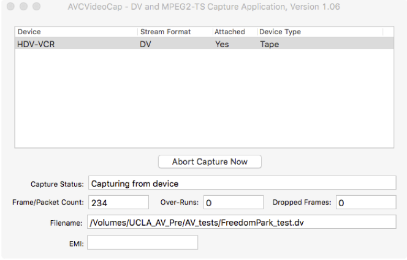
Initiate transfer of HDV content:
- For HDV open capture software called DVHSCap by either: * Typing DVHSCap in the Mac Spotlight search field or, * Goto: Macintosh HD>Developer>FireWireSDK26>Applications>DVHSCap.app
- Choose “Capture from D-VHS.” 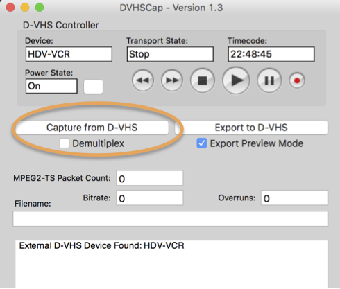
- Name your project and select “Save” in the “Select Capture File” window. Select a location on your hard drive for capturing the video. 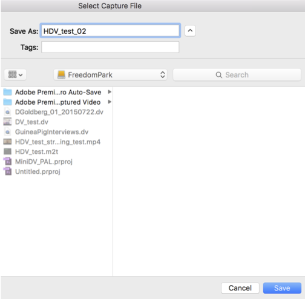
- The MiniDV will automatically begin playing and transmitting HDV data. When complete the tape will automatically stop. If you wish to stop capture at any point, select “Stop Capture.” The resulting digital video file will have a .m2t extension. 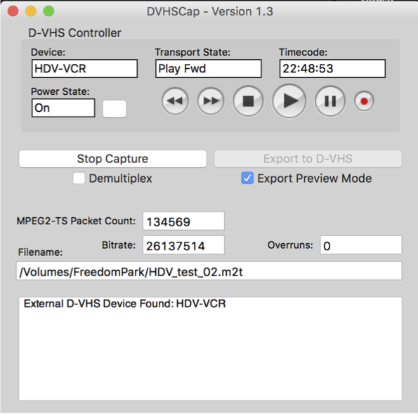
Creating Streaming Files for Access
In addition to the raw .dv and .m2t files you will keep for preservation, you will create smaller mp4 files for streaming access.
- Launch Adobe Media Encoder
- Type Adobe Media Encoder into the Mac Spotlight search field or,
- Go to: Launchpad > Adobe Media Encoder
- Drag the .dv and .m2t files you want to transcode to the Queue. 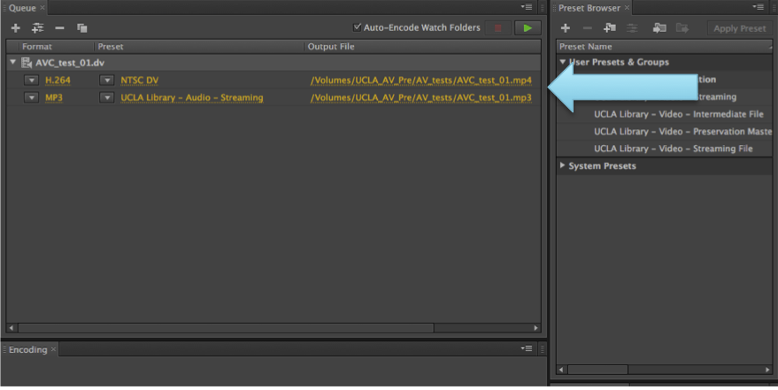
- Select each item in the queue, and under “Format” select H.264 from the drop-down list of video standards. 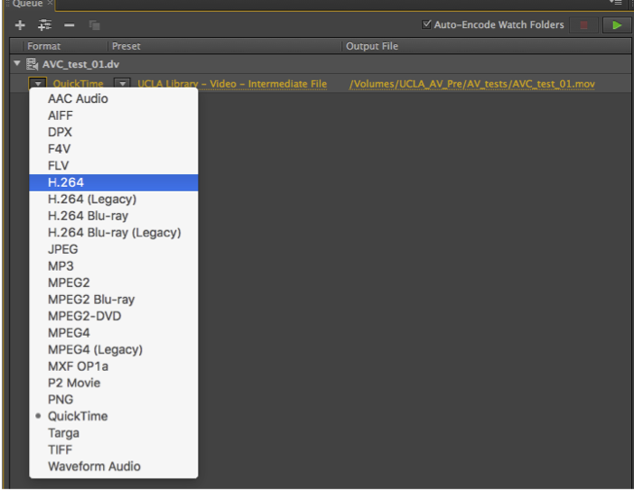
- Under “Preset,” select “UCLA Library - Video - Streaming File.” The specifications for this preset are:
- Video Stream: H.264/mp4 –AVC, SD, 480p
- Audio Stream: 32 kHz/16-bit AAC 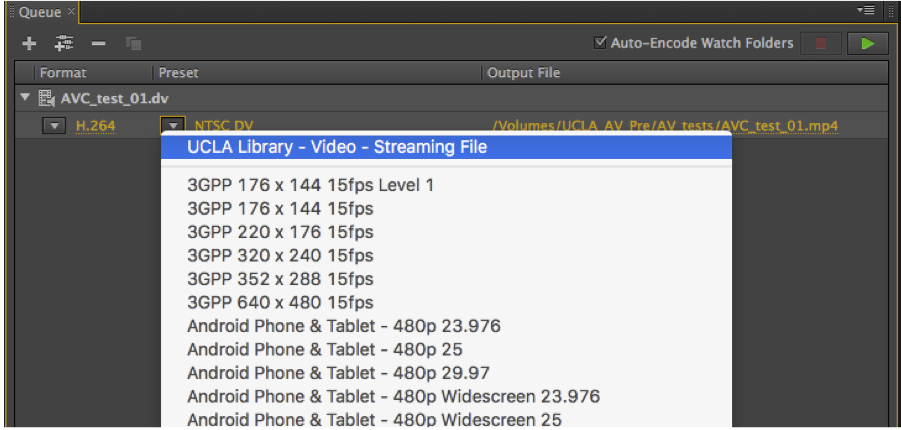
- Under “Output File” click on the file name to select a location to save the files.
- Repeat steps 3-5. Once you have a queue of files ready to be transcoded, click on the green play icon to start encoding. Ideally, you will process the files at the end of the work day and allow the processes to run overnight.r each file in the queue.
- Once you have a queue of files ready to be transcoded, click on the green play icon to start encoding. Ideally, you will process the files at the end of the work day and allow the processes to run overnight. 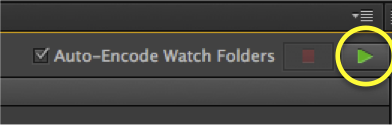
Repairing MiniDV Tape
Occasionally a MiniDV tape will have to be repaired. The tape may have torn or the original cassette housing has an issue that prevents playback. Torn tape may be repaired with ¼” splicing tape. If the cassette housing is damaged, it can be replaced with a new blank MiniDV cassette.

- Most Mini DV tapes have four small screws located on the underside of the casing. Using a small Phillips head screwdriver (approx. 1.4mm size), remove the four screws. Be careful not to let the tape inside unspool or get damaged. Place the screws in a secure location so they can be located easily when you’re done. If your tape does not have screws you will need to break the case open very carefully so the inside tape reels can be removed safely.
 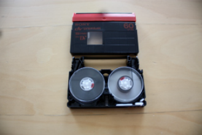
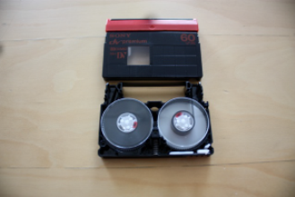 - Then, carefully join the edges, securing with a small piece of splicing tape on the shiny side. Do not place any tape on the matte or dull surface as that side contains the recording. Carefully trim any splicing tape that hangs over the MiniDV tape edge. It is advised that you wear gloves when handling the tape to avoid damaging the recording surface (despite the poor example photo below).
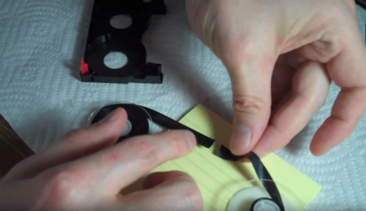
To prevent the tape from unspooling as you’re working, you may secure the hubs with a piece of tape: 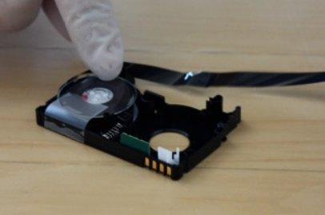 - If the cassette body is damaged, you may transplant the reels into a new cassette housing that has been disassembled. Carefully remove the reels from the old cassette and place into the new shell. Remove any excess slack by hand winding the reels. 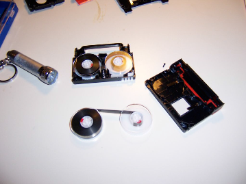
- Once repair is completed, place the tape cover in position and screw the casing shut to secure.